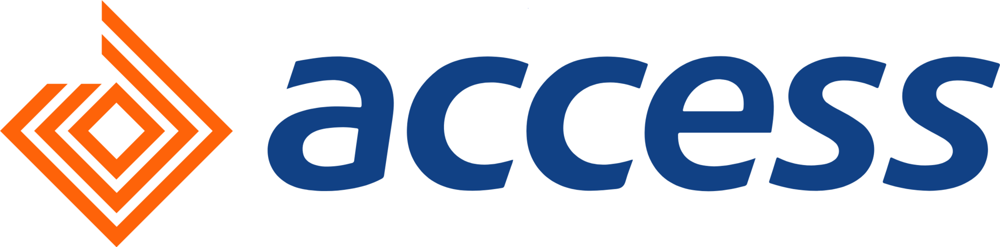
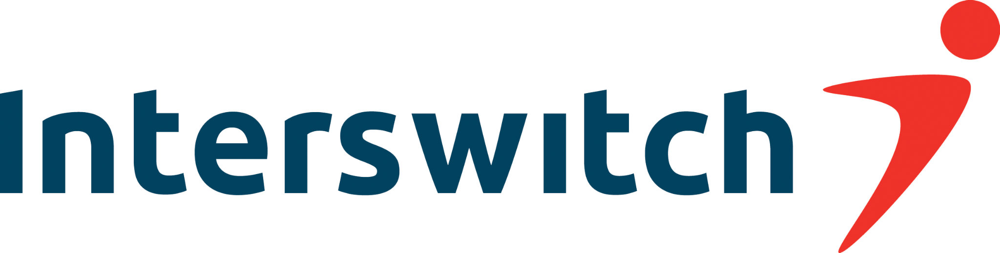
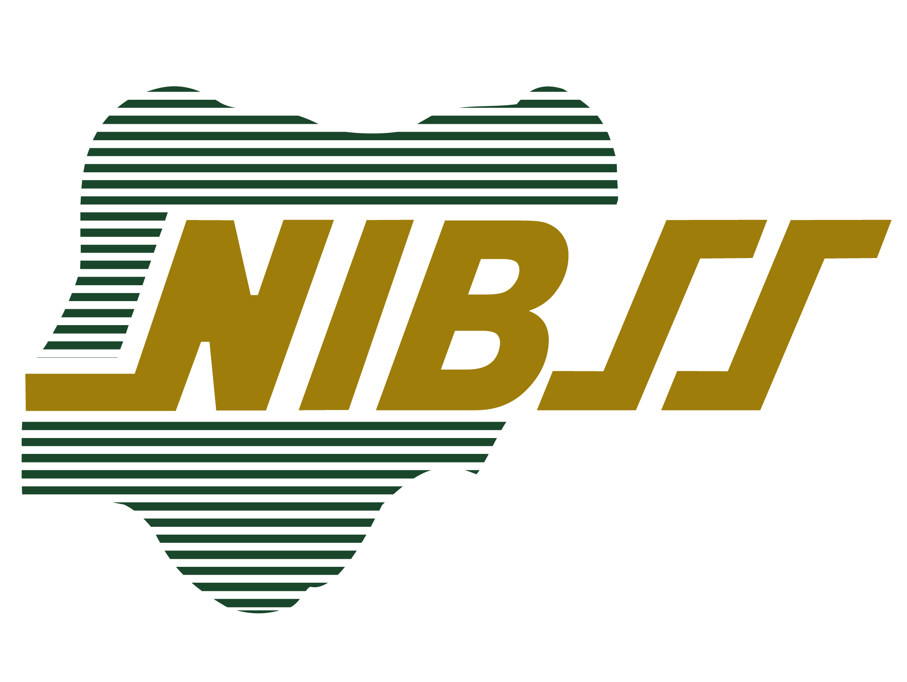

Building the workforce foundation
Early work in talent acquisition, performance and talent, and organisation development established the connection between hiring, capability, expectations and the environment in which people perform.
About
A career across human-capital leadership, total rewards, HR operations, workforce programmes and employee experience has shaped a practical conviction: people systems matter most when they help an organisation do its work well.

Professional perspective
They are the capability through which the operating model becomes real.
Strategy depends on people making decisions, coordinating work, developing capability and serving customers. Yet those responsibilities are often shaped by separate processes: workforce plans sit apart from business plans, reward decisions are treated as transactions, and employee experience is managed as a survey rather than as a consequence of everyday systems.
My work has repeatedly sat at the intersection of these concerns. Across talent acquisition, organisational development, strategic HR business partnering, compensation, HR information systems, shared services and human-capital leadership, the central question has been how to make people practices coherent enough to support organisational priorities and practical enough to work for employees.
That is the perspective behind this platform: people strategy should be designed with the work, the organisation and the human experience in view at the same time.
Professional journey
The career spans financial services, payments technology, inter-bank settlement systems and programme settings in Canada. The roles differ, but the work connects people, operating processes and organisational outcomes.
Early work in talent acquisition, performance and talent, and organisation development established the connection between hiring, capability, expectations and the environment in which people perform.
As Senior Strategic HR Business Partner at Access Bank Plc (October 2018–December 2019), the work sat close to business priorities and the people decisions needed to support them.
At Interswitch Group, as Manager, Reward & Shared Services (January 2020–January 2022), the focus included reward and shared-service disciplines. The role preceded leadership of human-capital management and total rewards at NIBSS.
As Head, Human Capital Management & Total Rewards at Nigeria Inter-Bank Settlement Systems PLC (February 2022–November 2024), the remit connected people leadership with total-reward and organisational systems.
Current programme-development and HR-program consulting work in Canada extends the perspective into mentorship, workforce programmes, inclusion-focused initiatives and programme evaluation.
Professional experience
Femi’s professional journey includes roles with these organisations. Their names are presented to describe career experience, not as endorsements or current client relationships.



Professional practice
People challenges rarely arrive in neat categories. A reward question may reveal an unclear job architecture. A service-delivery problem may begin with fragmented process ownership. A workforce gap may be a question of capability, deployment or the design of the work itself.
Documented areas of work include cross-country compensation and benefits harmonisation, HR systems deployment, workforce planning, leadership development, shared-services improvement, employee engagement, onboarding and inclusive recruitment. These examples are presented as professional themes—not as a claim that every intervention follows one formula.
The method is to understand the operating context first, distinguish symptoms from causes, identify the decisions and processes shaping the experience, and define evidence that can help leaders judge whether a change is working.
Academic formation
Formal study in human-resources development and mechanical engineering offers two complementary lenses: the development of people and the discipline of understanding how systems behave. Professional development adds a leadership and management perspective.
Obafemi Awolowo University
University of Lagos
Leadership Management, Lagos Business School, Pan-Atlantic University · November 2023
CBSP, ACIPM, SHRM-CP, CPHR, HRPL and Lean Six Sigma professional credentials are listed in the supplied profile.
The right people practice should do more than exist on paper. It should help people make better decisions and help the organisation deliver the work it is here to do.
Professional philosophy
Clarify the outcome, operating context and decisions before prescribing a programme.
Connect talent, reward, leadership, process and technology instead of optimising each in isolation.
Make systems understandable, fair and usable for the people who must live with them.
Choose measures that inform decisions, interpret them in context and stay honest about what they can establish.
The work ahead
Whether the question concerns workforce capability, total rewards, employee experience, HR service delivery or leadership development, the starting point is the same: understand what the organisation is trying to accomplish and how its people systems shape the result.
Start a conversation ↗